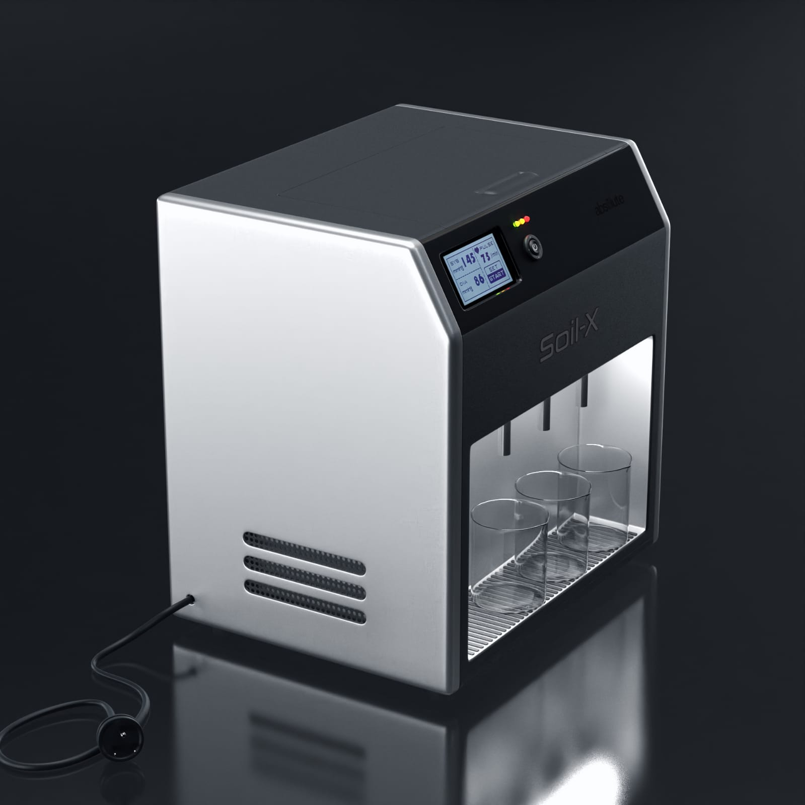
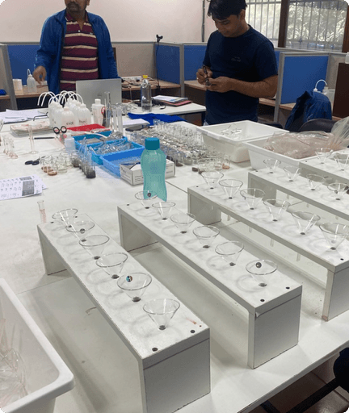
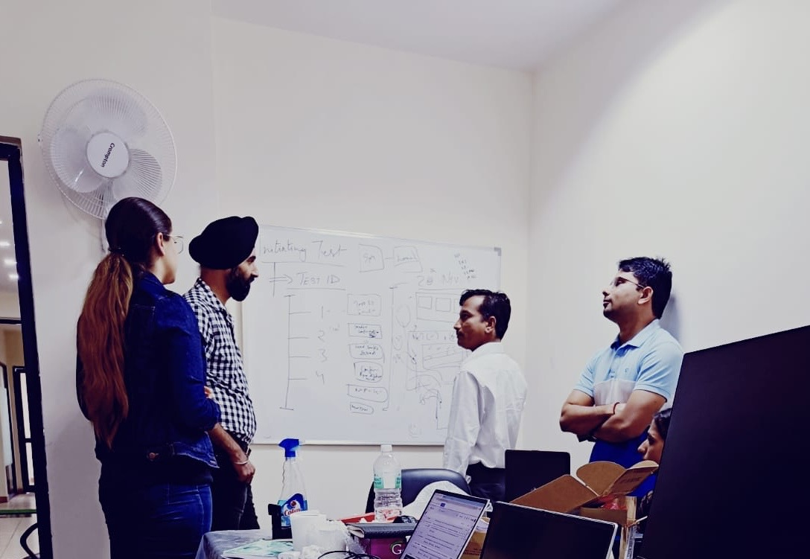
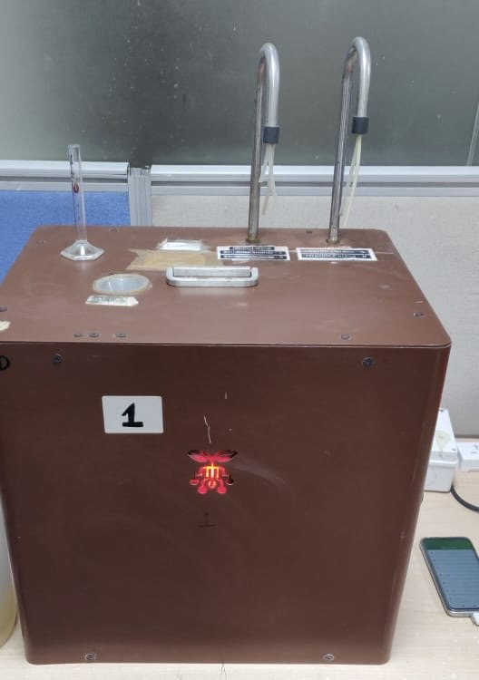
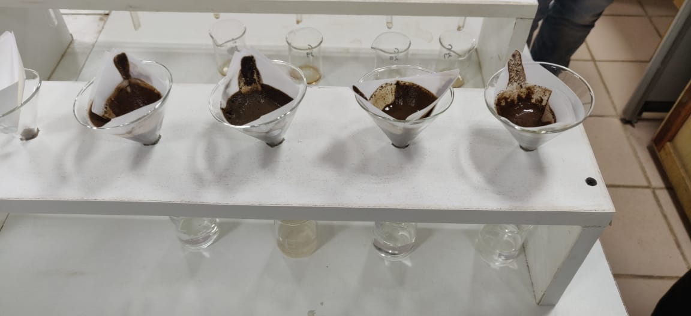
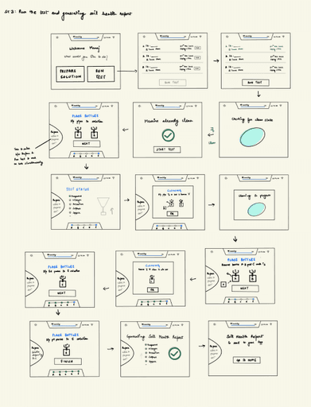
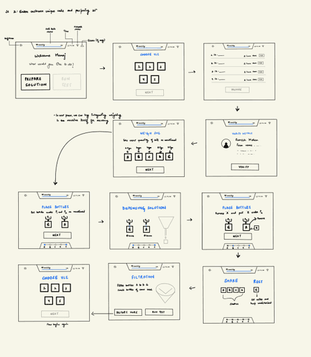
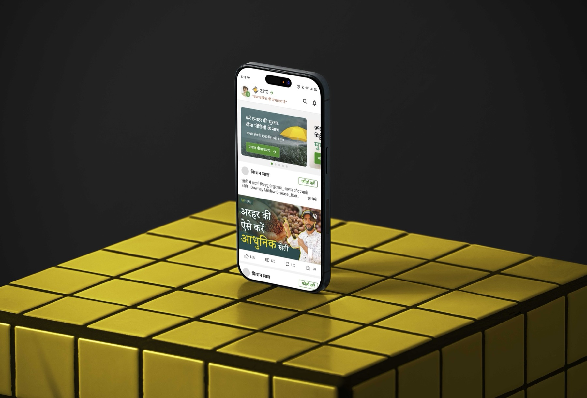

Dedicated smartphone dependency
The machine could only be controlled through a phone connected by wire, which added setup overhead and operational friction.
An ag-tech device designed to help farmers and lab technicians test soil faster, with less setup friction and without relying on a dedicated smartphone tethered to the machine.

The traditional soil-testing setup was complex to operate. Commands were given through a smartphone connected with a wire, which meant the machine needed a separate dedicated phone to run the process. On top of that, there was no clear space to manage test tubes during testing.
“The process needed fewer dependencies, clearer instructions, and a more technician-friendly workflow.”
Project direction
The machine could only be controlled through a phone connected by wire, which added setup overhead and operational friction.
Technicians had to keep moving test tubes between steps with no dedicated support inside the workflow.
The process involved parallel dependencies, filtration rules, and ordered actions that were difficult to understand quickly.
The challenge was not just interface design — it was translating a complicated laboratory process into something easier to follow on-device.





↩ some old photos of the soil machine
Before designing, I needed to understand the domain deeply. Agricultural soil testing is a precise, multi-step process where small mistakes compound into expensive failures. The technician's role is part chemist, part data analyst — accuracy and clarity are non-negotiable.
Spent time at test labs and farms in India observing how technicians currently ran tests, what frustrated them, and where errors happened most frequently.
Lab managers, field technicians, agricultural scientists, and equipment maintenance specialists to understand constraints from every angle.
Captured full preparation-to-testing workflows on video to identify friction points, decision-making moments, and where technicians improvised workarounds.
"The phone cable always gets in the way. I'm holding test tubes, trying to read instructions on a screen that keeps tilting because the wire is too short."
— Senior Technician, Soil Lab, India
"I have to remember which step comes next. There's no clear indication on the screen of what to do after filtration. I rely on my experience, not the machine."
— Lab Technician, Agricultural Research Institute
"Setting up the machine takes 8 minutes. Most of that time is untangling wires and waiting for the phone to connect. Testing the soil itself is just 2 minutes."
— Operations Manager, Soil Testing Center
80% of setup time was hardware friction, not test complexity. The ops manager's quote crystallised this: the soil test itself takes 2 minutes, but setup takes 8. We went in expecting to improve the UI step-by-step guidance. We came out realising the biggest win was eliminating the phone dependency entirely — moving all controls on-device. This single decision accounted for most of the setup time reduction. The UI work then focused on making the remaining workflow feel as guided and calm as possible.
My contribution
Tethering a smartphone via USB cable created setup friction, prevented technicians from moving freely, and added a failure point (broken cables).
No clear step-by-step guidance meant technicians relied on memory and experience. New users made mistakes; experienced users worked around the interface.
Test tubes sat randomly on the lab bench. No designated spots meant fumbling, dropped samples, and contamination risk.
The soil testing process had two distinct phases — preparation and testing. Each phase had its own set of ordered actions, dependencies, and potential failure points. The solution was to guide the technician through both phases step by step, with no information hidden and no reliance on memory.

The preparation phase required weighing precise amounts of soil, adding reagent solutions in the correct sequence, and managing filtration — all while physically handling test tubes. We introduced a guided on-device screen that showed only the current action, with the next step previewed below. A dedicated test-tube holder was incorporated into the physical machine design, eliminating the improvised workarounds technicians had been forced into.

Once the soil was prepared, the machine ran automated tests. But technicians needed to stay informed throughout — not just waiting. We designed clear status screens showing which test was running, the expected duration, and what to do in the interim. With the smartphone dependency removed, these screens live directly on the machine's built-in display, visible hands-free at any point in the workflow.


The final design focused on making the machine easier to activate, easier to operate during sample preparation, and clearer while running tests and reporting status.


Time to activate and prepare the machine before testing — cited directly by the operations manager during field research
Field technicians rating the redesigned on-device interface in post-testing evaluation rounds
The tethered smartphone — a primary source of setup friction and failure — was removed by moving all controls on-device
Looking back, this project taught me how important it is to translate a technically dense process into an experience that feels calm, accurate, and usable. A few things I'd approach differently now:
